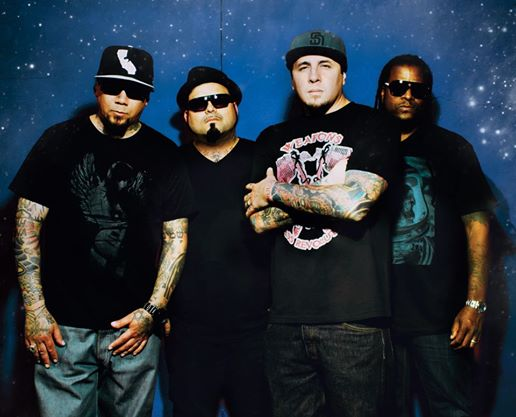
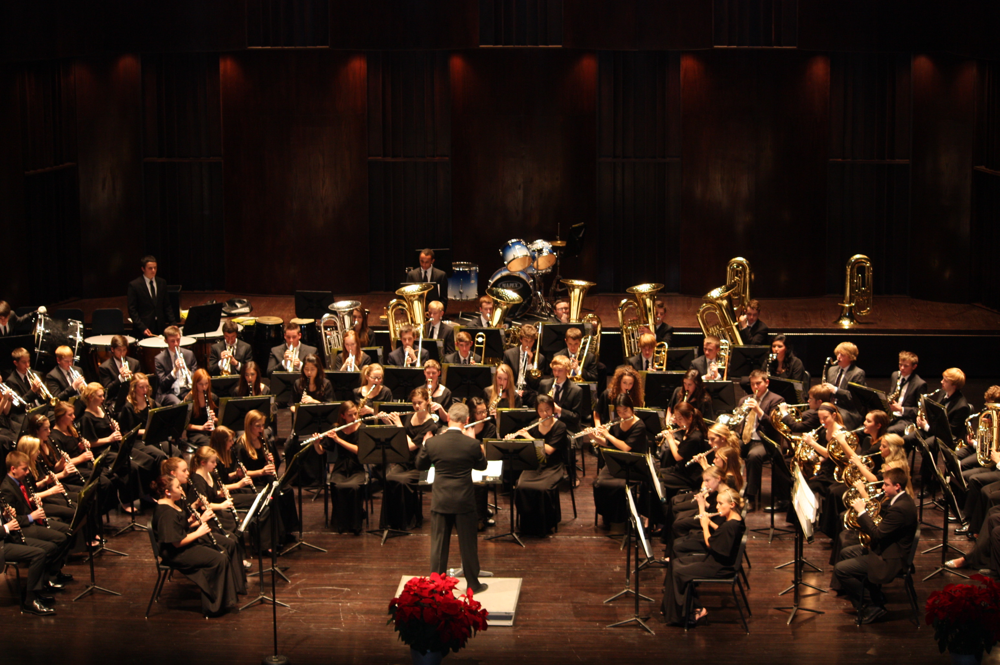

Rock music is a broad genre of popular music that originated as "rock and roll" in the United States in the early 1950s, and developed into a range of different styles in the 1960s and later, particularly in the United Kingdom and in the United States. It has its roots in 1940s and 1950s rock and roll, a style which drew heavily on the African-American genres of blues and rhythm and blues, and from country music. Rock music also drew strongly on a number of other genres such as electric blues and folk, and incorporated influences from jazz, classical and other musical styles. Musically, rock has centered on the electric guitar, usually as part of a rock group with electric bass and drums and one or more singers. Typically, rock is song-based music usually with a 4/4 time signature using a verse–chorus form, but the genre has become extremely diverse. Like pop music, lyrics often stress romantic love but also address a wide variety of other themes that are frequently social or political.

Rapping (or rhyming, spitting, emceeing, MCing) is a musical form of vocal delivery that incorporates "rhyme, rhythmic speech, and street vernacular", which is performed or chanted in a variety of ways, usually over a backbeat or musical accompaniment. The components of rap include "content" (what is being said), "flow" (rhythm, rhyme), and "delivery" (cadence, tone). Rap differs from spoken-word poetry in that rap is usually performed in time to an instrumental track. Rap is often associated with, and is a primary ingredient of hip-hop music, but the origins of the phenomenon predate hip-hop culture. The earliest precursor to the modern rap is the West African griot tradition, in which "oral historians", or "praise-singers", would disseminate oral traditions and genealogies, or use their formidable rhetorical techniques for gossip or to "praise or critique individuals." Griot traditions connect to rap along a lineage of Black verbal reverence that goes back to ancient Egyptian practices, through James Brown interacting with the crowd and the band between songs, to Muhammad Ali's quick-witted verbal taunts and the palpitating poems of the Last Poets. Therefore, rap lyrics and music are part of the "Black rhetorical continuum",[8] and aim to reuse elements of past traditions while expanding upon them through "creative use of language and rhetorical styles and strategies. The person credited with originating the style of "delivering rhymes over extensive music", that would become known as rap, was Anthony "DJ Hollywood" Holloway from Harlem, New York.

An instrumental is a musical composition or recording without lyrics, or singing, although it might include some inarticulate vocals, such as shouted backup vocals in a Big Band setting. The word "song" is widely misused by people in the popular music industry to describe any musical composition, whether sung or played only by instruments."The music is primarily or exclusively produced by musical instruments. An instrumental can exist in music notation, after it is written by a composer; in the mind of the composer (especially in cases where the composer himself will perform the piece, as in the case of a blues solo guitarist or a folk music fiddle player); as a piece that is performed live by a single instrumentalist or a musical ensemble, which could range in size from a duo or trio to a large Big Band, concert band or orchestra. In a song that is otherwise sung, a section that is not sung but which is played by instruments can be called an instrumental interlude, or, if it occurs at the beginning of the song, before the singer starts to sing, an instrumental introduction. If the instrumental section highlights the skill, musicality, and often the virtuosity of a particular performer (or group of performers), the section may be called a "solo" (e.g., the guitar solo that is a key section of heavy metal music and hard rock songs). If the instruments are percussion instruments, the interlude can be called a percussion interlude or "percussion break". These interludes are a form of break in the song.